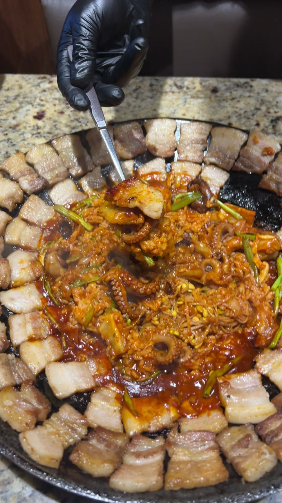
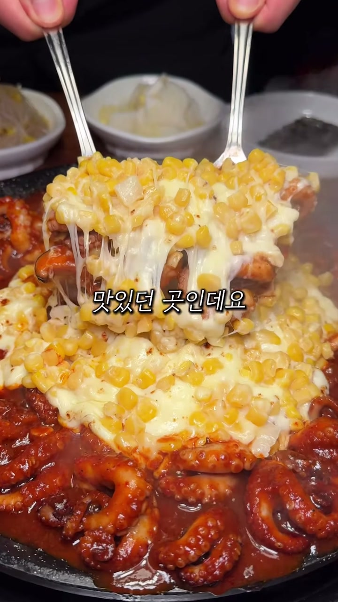

🎥 필수 장면 6컷
레퍼런스 영상을 참고해 아래 6개 장면을 모두 촬영해주세요.
 01
오프닝
01
오프닝
쭈꾸미 붓기
삼겹살 링이 세팅된 솥 중앙에 양념 쭈꾸미를 볼째로 쏟아붓는 장면.
- 솥 전체와 볼을 한 프레임에 담기
- 볼에서 쭈꾸미가 흘러내리는 타이밍 포착
- 삼겹살 링이 꽉 찬 느낌 강조
 02
세팅
02
세팅
미나리 한 움큼
미나리를 한 아름 집어 쭈꾸미 위에 올리는 장면. 싱그러운 색감 대비가 포인트.
- 미나리의 초록빛과 붉은 쭈꾸미 색 대비 살리기
- 솥 위쪽에서 내려다보는 앵글 추천
- 채소 가득한 풍성함 강조
 03
조리
03
조리
함께 볶기
두 스패출라로 쭈꾸미+미나리를 함께 볶는 장면. 솥의 열기와 움직임이 느껴지도록.
- 스패출라 두 개 모두 화면에 담기
- 삼겹살 링이 테두리에 살짝 보이도록
- 볶는 소리 ASMR 활용 추천
 04
클라이맥스
04
클라이맥스
연기 모락모락
솥에서 연기가 올라오는 완성 직전. 뜨거운 불맛과 풍성한 비주얼의 절정.
- 연기를 역광으로 살리는 앵글
- 삼겹살 링과 쭈꾸미 함께 보이도록
- 연기 흐르는 방향에 카메라 위치

05 클로즈업쭈꾸미 집어올리기
완성된 쭈꾸미를 집게로 가득 집어올리는 클로즈업. 붉은 색감과 쭈꾸미 흡반이 포인트.
- 집게 가득 쭈꾸미 채워서 들어올리기
- 흡반 질감이 보이도록 근접 촬영
- 배경은 솥 전체 살짝 아웃포커스

06 피날레치즈콘 클로즈업
치즈콘을 국자로 들어올리는 메인 비주얼. 녹아 흘러내리는 치즈와 쭈꾸미의 조합.
- 치즈 흘러내리는 타이밍 정확히 포착
- 국자 아래 쭈꾸미도 함께 담기
- 근접 촬영으로 욕망감 최대화